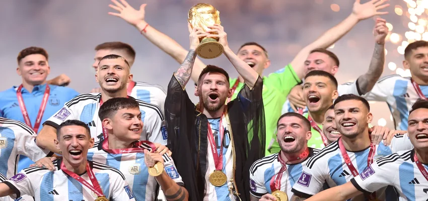
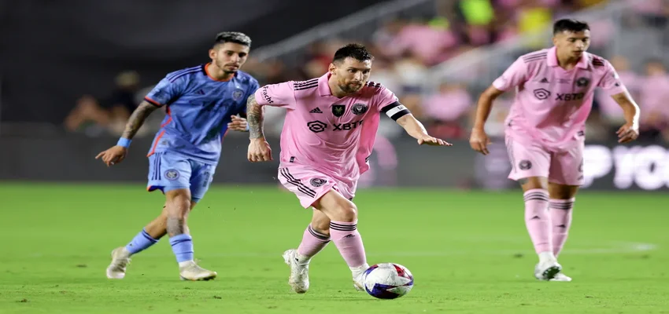

Lionel Messi says he is focused on playing at next year’s Copa América but doesn’t rule out appearing at 2026 World Cup
Lionel Messi is focused on playing at next June’s Copa América in the USA, though the eight-time Ballon d’Or winner hasn’t completely ruled out appearing for Argentina at the 2026 World Cup, he told an ESPN/Star+ documentary “Champions, A Year Later.”
“As long as I feel good and I can continue to deliver, I’m going to (continue playing with Argentina). All I’m thinking about today is getting to the Copa América and being able to play in it,” he said.
“Then time will tell whether I’ll be at the World Cup or not. I’m going to be at an age (39) that normally doesn’t allow me to play in the World Cup.
“I will always try to compete to the maximum and I am the first to know when I can be at that level and when I can’t.”
Messi inspired Argentina to World Cup glory in 2022 on his fifth attempt, winning the Golden Ball for the tournament’s best player along the way and scoring twice in the final against France.
That victory, along with a 2021 Copa América trophy, came after international glory had eluded Argentina and Messi for years, as they lost three major finals in a row – the 2014 World Cup, 2015 Copa and 2016 Copa.
“After suffering for so many years, now that we are experiencing a special moment that I have never experienced before, I want to enjoy it to the fullest,” Messi said.
“I feel good within the group, which is very united, very strong. A group that enjoys being together. I want to take advantage of all that, without thinking two or three years ahead, which in football is a lot.”
Since winning the World Cup in Qatar, Messi has moved across the Atlantic, joining MLS club Inter Miami and prompting a new wave of American interest in soccer.